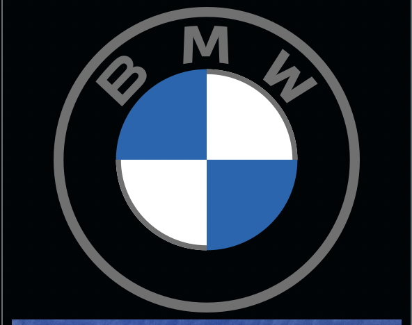

BMW Headquarters in Munich, Germany Formerly Rapp Moterenwerke AG Company type Public (Aktiengesellschaft) Traded as FWB: BMW DAX component Industry Automotive Predecessors Otto Flugmaschinenfabrik Rapp Motorenwerke Fahrzeugfabrik Eisenach Founded October 27, 1913; 110 years ago (as Rapp Motorenwerke) Founder Karl Rapp Headquarters Munich, Germany Area served Worldwide Key people Oliver Zipse, Chairman of the Board of Management Norbert Reithofer, Chairman of the Board of Supervisory Products Carsmotorcycles Production output Decrease 2,382,305 cars (2022) Increase 215,932 motorcycles (2022)[1] Brands Automobiles Alpina BMW BMW i BMW M BMW X BMW Z DriveNow Mini Rolls-Royce Motorcycles BMW Motorrad Services Car-sharing services, financing, leasing, insurance and other financial services Revenue Increase €142.610 billion (2022)[1] Operating income Increase €23.509 billion (2022)[1] Net income Increase €18.582 billion (2022)[1] Total assets Increase €246.926 billion (2022)[1] Total equity Increase €91.288 billion (2022)[1] Owners Public (50.7%) Stefan Quandt (25.8%, 25.6% through holdings and 0.19% directly) Susanne Klatten (20.9%, 20.7% through holdings and 0.2% directly)[2] Number of employees 149,475 (2022)[1]
